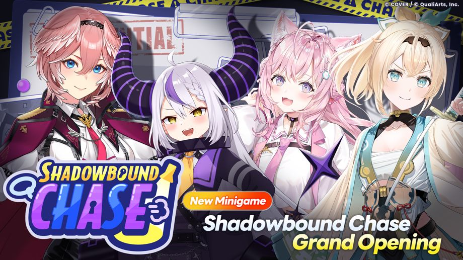

Thank you for using our service.
This is the hololive Dreams management team.
2026-08-28 11:00:00: Updated to Ver.1.1.0.
The new minigame "Shadowbound Chase" begins!

The new minigame "Shadowbound Chase" begins!
Shadowbound Chase is a Minigame where two teams compete: the Prank Gang who runs away, and the Patrol Squad who chases them down.
For details go to [Notice] → [List] → [Minigames]
Other updates
◆Item Reward Improvements
Based on your feedback, we've reviewed and adjusted the amount of Red Diamonds, training materials, and other items you can obtain.
- 2026-09-01 05:00:00: Starting from this date, a total of 1,000 Red Diamonds will be added to the Free Pass in the Mission Pass.
- The amount of training materials obtainable from live performances has been increased, making it easier to train your members.
-
- The amount of Lesson Pts and Hologold obtainable has been increased.
- The amount of various Beads obtainable (drop rate) has been increased.
- The amount of various Crystals obtainable (drop rate) has been significantly increased.
- Live Boosts have been added to the Holosticker Exchange and Special Holosticker Exchange.
- The monthly exchange limit for Hololium in the Special Holosticker Exchange has been increased from 5 to 20.
- To make it easier to earn Mega Sphere Coins, starting with the event on2026-08-29 12:00:00, Mega Sphere Coins will be obtainable through the Event Exchange.
◆Improvements to Multiplayer Live Shows
-
You can now cancel a Live even after confirming the difficulty on the difficulty settings screen.
Cancellation is available within the time limit until all participants have selected a Difficulty and are ready. - The "Include AUTO” setting on the Mode selection screen and the "AUTO" setting on the Difficulty selection screen will retain the most recently selected settings.
◆Improvements to Original Charts
- You can now save and share images containing information about charts you've made yourself or your own favorite ones.
- You can now navigate from an Original Chart's creator to a list of their own charts.
- Original Charts from players you’ve blocked will no longer show.
- You can now press and hold the Decoration Note Tool to open the color palette.
- Improved warning and violation marker displays, making navigation easier.
- You can now configure the Note Speed before configuring Thumbnail Settings.
- You can now delete captured thumbnails from Thumbnail Settings.
- You can now configure Live settings in the Test Play Settings screen.
- You can now adjust the Editor’s Display width to dynamically fit the screen size.
- We have strengthened checks for inappropriate charts.
- An audio spectrum is now displayed during chart creation (Steam only).
◆Other Updates
- Gachas that let you pick a Member will each have their own separate “Try selecting Hot Picks Members” filter and sort setting.
- Holowork completion notifications will no longer appear repeatedly within a short period of time.
- The time limit after the first-place player crosses the finish line in Mega Circuit has been extended.
-
Game Center integration is now available on iOS devices.
A sign-in screen will be shown the first time you launch the app after updating to Ver. 1.1.0 or later.
◆Bug Fixes
The following issues have been resolved.
- Under certain conditions, the game could temporarily experience performance issues immediately after starting a Live in "Live Together."
- While in the song selection screen of a “Live Together,” it sometimes becomes impossible to perform any actions until the countdown timer reaches 0.
- In the “Mega Circuit” minigame, certain actions may cause the game to incorrectly detect when the finish line has been reached.
- In the “Mega Circuit” minigame, players could climb onto unintended areas of the stage.
- In the “Mega Circuit” minigame, players could respawn at an unintended location after falling.
- If the app crashes while publishing a song in Create Chart mode, song publishing sometimes becomes impossible.
- Some players may encounter a screen showing "Invalid parameters." after ending a Live or a minigame.
- When claiming Achievements, an "Invalid parameters." error message may appear in some cases.
- When resetting a Holomem Board, an "Invalid parameters." error message may appear in some cases.
- When using the Steam version, the mouse cursor disappears from the title screen, making it impossible to interact with the game.
- Some players may experience an issue where they start with a different holomem than the one they chose during "Choose the first holomem to play." at the start of the game.
- Under certain conditions, the displayed cost for purchasing Mission Pass levels may be higher than the actual amount used.
- Under certain conditions, progress may be recorded for some achievements related to unlocking Songs even though the requirements have not been met.
- In Play Results for Lives, Dream EXP is also incorrectly listed as a Score Reward, even though it is awarded regardless of score.
- In the EXPERT difficulty of the song “Kyun Kyun MIKO Kyun kyun♡,” one note was positioned off its intended spot.
- Convo Voices can be played before they are unlocked by obtaining members.
- Fixed various minor issues.